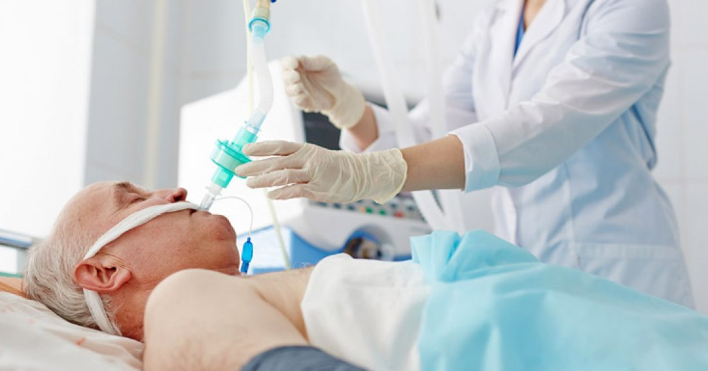

Tratamento
A COVID-19, até o momento, não apresenta tratamento específico, assim como a
maioria das doenças virais. A recomendação é o repouso e hidratação nos casos
leves da doença. Os sintomas, como febre e dor, são tratados com uso de medicamentos
antitérmicos e analgésicos. Alguns medicamentos já existentes foram testados a fim
de se curar a COVID-19, entretanto, nenhum se mostrou eficaz na cura da doença.
Apesar da falta de evidências científicas, alguns medicamentos continuam sendo utilizados,
o que gera muita discussão entre os especialistas. Os casos graves da doença requerem
internação, sendo esta, muitas vezes, em Unidade de Terapia Intensiva. A internação está
relacionada, geralmente, com quadros de dificuldade respiratória, quando se faz necessário
o uso de ventilação mecânica.

Prevenção
A doença é grave e potencialmente fatal, sendo assim, é fundamental
prevenir-se dela e evitar sua transmissão para outras pessoas. Veja, a seguir, algumas
dicas importantes para a prevenção e o controle da COVID-19:
- ♦Lave as mãos frequentemente com água e sabão ou faça higienização utilizando álcool em gel 70%.
- ♦Evite tocar olhos, nariz e boca com as mãos sem a devida higienização.
- ♦Mantenha distância de, pelo menos, 2 metros de outras pessoas.
- ♦Evite abraços, beijos e apertos de mão.
- ♦Não compartilhe objetos de uso pessoal, como talheres, pratos, copos e toalhas.
- ♦Limpe objetos que são utilizados com frequência, como celulares e brinquedos de crianças.
- ♦Ao tossir ou espirrar, utilize lenço ou a parte interna do cotovelo para cobrir o nariz e a boca.
- ♦Se não estiver se sentindo bem, permaneça em casa, e, em caso de febre, tosse e dificuldade para respirar,
procure um médico.
- ♦Mantenha os ambientes ventilados e limpos.
- ♦Utilize máscara em todos os lugares que tiver contato com outras pessoas fora do seu convívio diário.
- ♦OBSERVAÇÃO: As máscaras caseiras de tecido não são consideradas um equipamento de proteção individual (EPI), entretanto,
são uma boa forma de impedir a disseminação da doença, pois funcionam como barreira física, reduzindo a quantidade
de gotículas eliminadas no ambiente.
Desenvolvido por - Luísa Maira ©